Abstract. This report describes a small Godot game whose character is a 28-bone hierarchical model, animated in two ways that the player can switch at run time: clips cut from the motion capture recorded by the class, and procedural walk and run cycles built with analytic two-bone leg inverse kinematics. A scripted scene replays the complete capture takes, nearly nine minutes, with the original root motion. The capture clips were selected automatically by minimising the joint-angle difference between the first and last poses, made to play in place and closed seamlessly. The character, a robot witch inspired by the folklore of Franklin Cascaes, was generated with generative AI (Stable Diffusion 3.5 and Hunyuan3D-2, the latter running locally on an AMD GPU) and bound to the capture skeleton with automatic weights. The report also documents the problems found along the way and how they were solved. Thirty-five automated checks, two demo videos and Windows and Linux builds complete the delivery.
Resumo. Este relatório descreve um pequeno jogo em Godot cujo personagem é um modelo hierárquico de 28 ossos, animado de duas formas que o jogador alterna durante o jogo: clipes recortados da captura de movimentos gravada pela turma e ciclos procedurais de andar e correr, construídos com cinemática inversa analítica de dois ossos nas pernas. Uma cena automática reproduz as tomadas completas da captura, quase nove minutos, com o deslocamento original. Os clipes da captura foram escolhidos automaticamente pela menor diferença de ângulo das articulações entre a primeira e a última pose, postos para tocar no lugar e fechados sem emenda. O personagem, um robô-bruxa inspirado no imaginário de Franklin Cascaes, foi gerado com IA gerativa (Stable Diffusion 3.5 e Hunyuan3D-2, este rodando localmente em uma GPU AMD) e ligado ao esqueleto da captura com pesos automáticos. O relatório também documenta os problemas encontrados e como foram resolvidos. Trinta e cinco verificações automáticas, dois vídeos de demonstração e executáveis para Windows e Linux completam a entrega.
O Trabalho 4.0 pede um modelo hierárquico que simule a movimentação de um bicho, robô ou pessoa, com pelo menos dois tipos de movimento, como andar e correr. A orientação complementar do professor pede que o personagem seja animado com captura de movimentos (MoCap), de preferência a gravada pela própria turma. A página de IA gerativa da disciplina propõe um personagem inspirado em Franklin Cascaes, um ambiente nas fortalezas da Ilha de Santa Catarina e uma jogabilidade mínima com pontuação. O uso documentado de IA gerativa no personagem vale até dois pontos extras.
O resultado é o jogo Fortaleza em Movimento: o jogador anda (WASD) e corre (Shift) com um robô-bruxa em uma fortaleza simplificada, inspirada na de Anhatomirim, e coleta moedas. O trabalho apresenta duas versões de animação para o mesmo esqueleto:
A tecla Tab alterna entre as versões durante o jogo, com transição suave. A Seção 2 apresenta os fundamentos, a Seção 3 descreve o método, a Seção 4 relata o progresso e as dificuldades, a Seção 5 mostra os resultados, a Seção 6 declara o uso de IA, e as Seções 7 e 8 trazem as limitações e a conclusão.
Em um modelo hierárquico, cada parte do corpo é posicionada em relação à parte da qual depende. O esqueleto é uma árvore de ossos (Figura 1): mover o quadril leva o corpo inteiro, mover o braço leva o antebraço e a mão. Cada osso b tem uma pose de repouso Rb e, a cada quadro, uma transformação local Lb relativa ao repouso. A transformação global é obtida descendo a árvore a partir da raiz (Equação 1), o que se chama cinemática direta [Parent 2012].
Hips, a raiz); braços e cabeça são filhos da coluna (Spine, um único osso do quadril ao tórax). Nas mãos, os polegares têm dois ossos (Thumb1 → Thumb2); os ossos End marcam a ponta de cada cadeia.Na captura óptica, o ator veste marcadores refletivos e câmeras infravermelhas registram suas posições. Um programa de solving ajusta, quadro a quadro, um esqueleto aos marcadores e grava as rotações das articulações e a posição do quadril. As capturas da turma são 9 arquivos FBX a 120 quadros por segundo, com o mesmo esqueleto de 28 ossos e em escala real.
Na cinemática inversa, a pose é calculada a partir de onde se quer que a extremidade esteja. Para uma perna com coxa de comprimento l1 e canela l2, quadril em H e tornozelo desejado em A, o joelho K sai da lei dos cossenos (Equação 2), em que L = |A − H|, d̂ é a direção de H para A e n̂ é a direção, perpendicular a d̂, para onde o joelho dobra (a frente do corpo) [Aristidou et al. 2018].
Para a malha acompanhar o esqueleto, cada vértice recebe pesos que dizem quanto ele segue cada osso. No linear blend skinning [Magnenat-Thalmann et al. 1988], a posição deformada é a média ponderada das transformações dos ossos aplicadas ao vértice em repouso (Equação 3). Os pesos foram calculados pela difusão de calor do Blender (bone heat) [Baran e Popović 2007].
As poses dos clipes são misturadas com pesos que dependem da velocidade, em um blend space de uma dimensão (parado em 0, andar e correr nas suas velocidades), com rotações interpoladas por quatérnios [Shoemake 1985]. Os clipes tocam "no lugar", sem o deslocamento horizontal do quadril, que é feito pelo controlador. Se o controlador andar em velocidade diferente daquela para a qual o clipe foi feito, os pés parecem patinar; por isso cada versão de animação usa as suas próprias velocidades.
A Figura 2 resume o caminho. Todo o processo é reproduzível por scripts (Blender em modo sem janela, Python e Godot).
Para achar trechos de caminhada e corrida em mais de duas horas de gravação, um script mediu, segundo a segundo, a velocidade do quadril e a fase de voo (os dois pés acima de 6 cm do chão ao mesmo tempo), que distingue a corrida da caminhada (Figura 3). A sala de captura é pequena (cerca de 5 m × 3 m), por isso as corridas duram só 2 a 3 s e saem com o corpo inclinado.
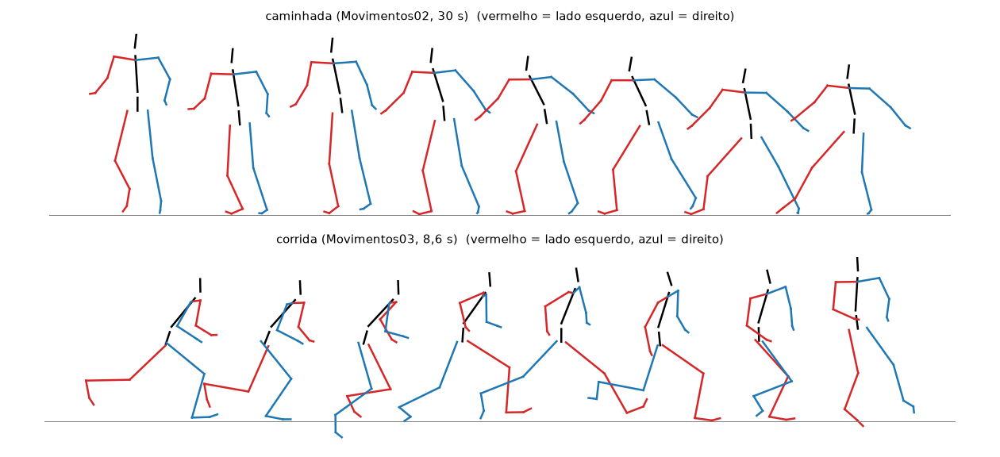
Um clipe de locomoção precisa terminar na pose em que começa. Para cada movimento, o script avalia todos os pares de quadros (s, e) dos trechos candidatos e escolhe o de menor custo (Equação 4), que combina a diferença entre as duas poses com penalidades por trajetória curva, por mudança de direção e por deslocamento fora da frente do corpo. É a mesma ideia dos pontos de transição dos grafos de movimento [Kovar et al. 2002].
em que:
End e os 4 dos polegares;O deslocamento horizontal do quadril é então removido por uma translação, que desfaz o avanço em velocidade constante, e por uma rotação em torno do eixo vertical, que alinha a caminhada com a frente do personagem. A pequena diferença que resta entre a primeira e a última pose é distribuída ao longo do clipe: cada rotação recebe uma fração crescente da correção, interpolada por slerp. As poses são reescritas em um esqueleto limpo (em metros, com Z para cima) com os 28 ossos da captura (Tabela 1). Para a cena automática, as oito tomadas completas (536,8 s no total) foram convertidas da mesma forma, mas mantendo a trajetória original do quadril.
| Clipe | Origem | Duração | Velocidade | Custo |
|---|---|---|---|---|
| parado | Movimentos02.fbx, 20,1–22,1 s | 2,0 s | — | 0,9 |
| andar | Movimentos02.fbx, 61,2–63,8 s | 2,6 s | 0,99 m/s | 4,7 |
| correr | Movimentos06.fbx, 19,6–21,1 s | 1,5 s | 1,86 m/s | 10,0 |
A segunda versão de animação foi escrita do zero (blender/procedural_gait.py). Cada ciclo é uma
função periódica da fase φ ∈ [0, 1), o que garante um loop perfeito. Para cada quadro:
Cada osso recebe uma rotação global desejada Db, e a rotação local sai da Equação 1: Lb = Rb−1 Dp(b)−1 Db Rb. O andar tem ciclo de 1,1 s a 1,35 m/s (β = 0,62) e a corrida, de 0,7 s a 2,8 m/s (β = 0,36, com fase de voo). Medido no Blender, o pé de apoio recua a 1,35 m/s no andar e a 2,79–2,80 m/s na corrida, exatamente a velocidade do controlador, o que confirma que os pés não deslizam. A Figura 4 compara as duas versões.
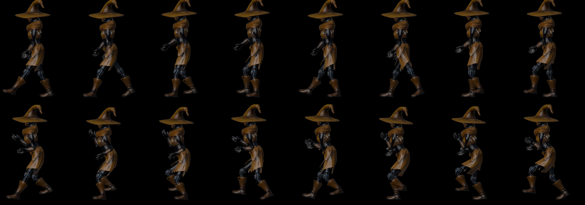
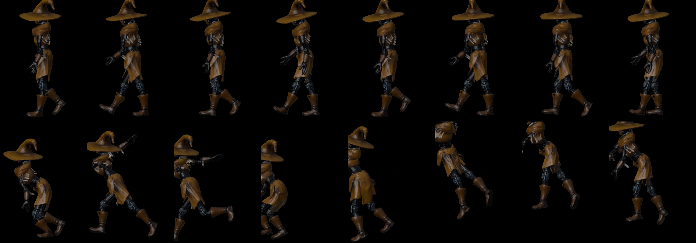
O conceito foi gerado pelo Stable Diffusion 3.5 Large Turbo [Esser et al. 2024]: um robô-bruxa inspirado nas bruxas de Franklin Cascaes, em pose T e com as pernas separadas, exigências técnicas para o encaixe no esqueleto da captura. A forma 3D foi gerada pelo Hunyuan3D-2 [Tencent Hunyuan3D Team 2025] a partir da imagem com o fundo recortado (Figura 5), e a textura pelo Hunyuan3D-Paint, rodando no computador do grupo, em uma Radeon RX 9070 XT, com o PyTorch oficial da AMD (Figura 6). As tentativas que falharam estão na Seção 4.
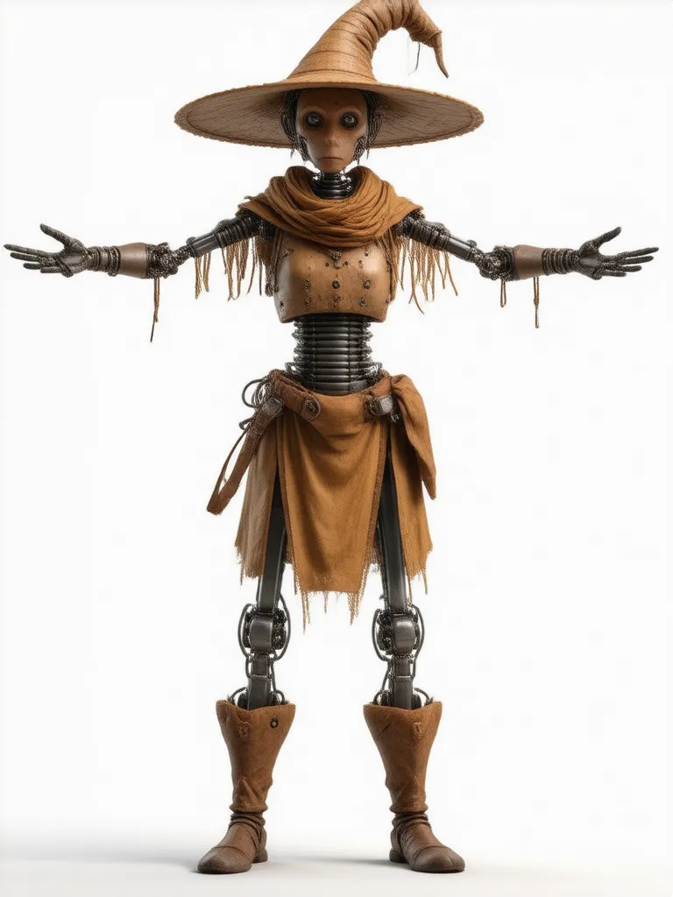
(a) Conceito (SD 3.5)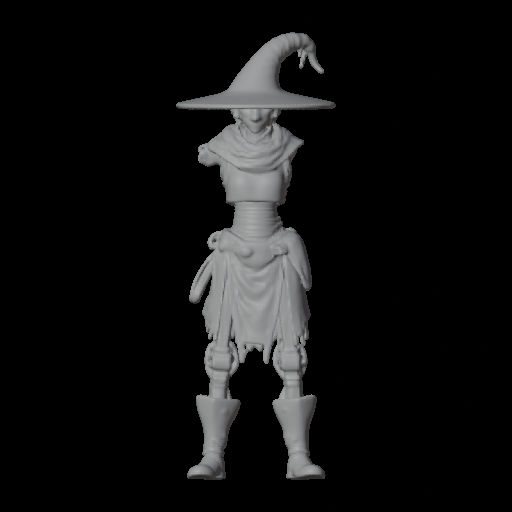
(b) 1ª tentativa: sem braços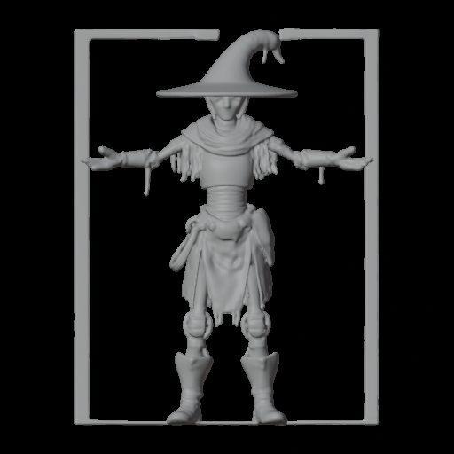
(c) 2ª tentativa: moldura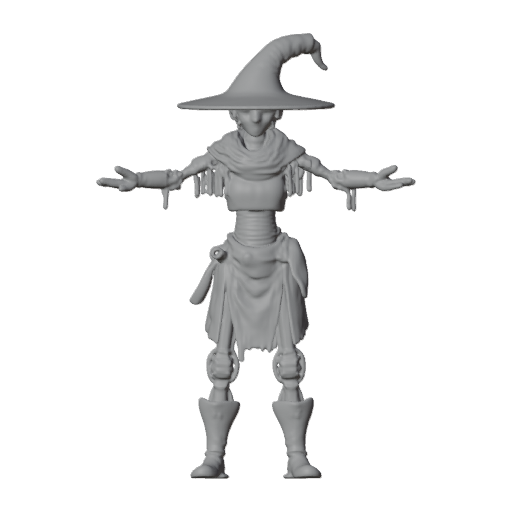
(d) Forma final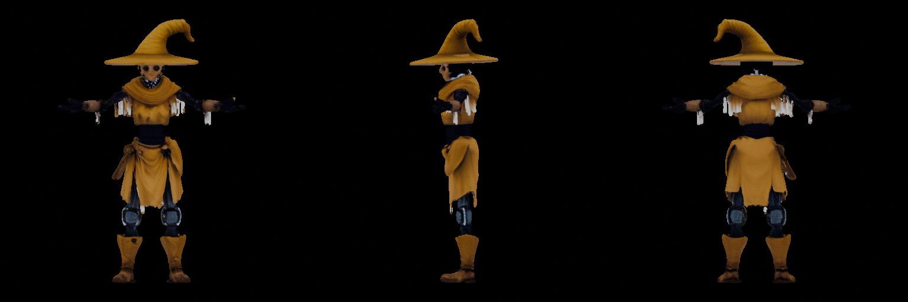
Um script do Blender importa a malha texturizada, junta os vértices que o formato glTF duplica nas costuras, remove fragmentos soltos e encaixa a malha na pose de repouso: escala pela envergadura dos braços (×1,14), uma correção vertical limitada (×0,965) e uma translação que põe os pés no chão. Os pesos automáticos alcançaram os 19.952 vértices (Figura 7).
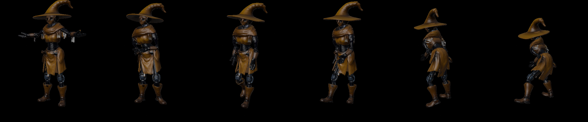
O personagem é um CharacterBody3D; o Skeleton3D importado executa a cinemática direta.
Uma AnimationTree tem dois BlendSpace1D, um por versão de animação, unidos por um nó
Blend2 que faz a transição suave quando o jogador aperta Tab. A cada quadro de física, o controlador
lê o teclado, calcula a direção relativa à câmera, acelera até a velocidade de andar ou correr da versão ativa,
gira o corpo para a direção do movimento e envia a velocidade aos dois blend spaces. O cenário é uma
fortaleza simplificada com muralhas, guaritas, quartel, canhões (cada um, um pequeno modelo hierárquico) e
tochas com luz própria; moedas somam pontos. A cena automática da captura (--mocap-show) toca as oito
tomadas completas em sequência, com uma câmera que orbita o personagem e uma legenda com o nome da tomada.
O trabalho não saiu certo da primeira vez. A Tabela 2 resume, em ordem cronológica, os problemas encontrados e o que foi feito para resolvê-los. Vários deles só apareceram ao olhar o resultado (renders e prints), e alguns foram pegos pelas verificações automáticas.
| Problema | Como apareceu | Solução |
|---|---|---|
| Achar corridas em 2 h de gravação, numa sala pequena | Velocidade média raramente passa de 2 m/s | Detecção de fase de voo (Seção 3.1) |
| Manequim com "lâminas" nos braços (Figura 8) | Print do jogo | Pesos gravados vértice a vértice na camada de deformação, em vez de calcular faixas de índices |
| Loops com "tranco" (34° por articulação na corrida) | Custo do loop alto | Busca em todos os trechos candidatos das 8 capturas |
| Piloto automático ignorava comandos | Teste automático falhou | Zerar o relógio ao trocar de roteiro |
| Cota de GPU anônima do Hugging Face esgotada | Erro do serviço | Conta gratuita com token salvo localmente |
| Malha sem braços; depois, com moldura (Figura 5b, c) | Render da malha | Recorte de fundo próprio, imagem transparente |
| Moldura presa ao personagem e animada com os braços (Figura 10a) | Render das animações | Gerar a malha a partir da imagem transparente (sem moldura) |
| Recorte da moldura por máscara 2D destruiu a malha (Figura 10b) | Render das animações | Abandonado; mesma solução acima |
| Textura do Hunyuan3D desativada no serviço; versão 2.1 acima da cota | Erros do serviço | Textura provisória projetada (Figura 9), depois Hunyuan3D-Paint local na GPU AMD |
| Hunyuan3D-Paint não roda na AMD/Windows | Extensão CUDA; erro de kernel na GPU integrada | Rasterizador reescrito em PyTorch (idêntico ao original em 100% dos pixels); GPU integrada desativada; flash attention experimental verificado |
| Pesos automáticos falharam em 100% dos vértices | Teste com malha substituta | Juntar vértices duplicados pelo glTF |
Arquivo .blend de 292 MB | Tamanho do arquivo | Remover as tomadas originais embutidas |
| Clipes tocando 4 vezes mais rápido no jogo | Medição do pé de apoio a 5,4 m/s em vez de 1,35 | Restaurar 30 fps na cena antes de exportar (a importação do FBX muda para 120); novo teste de duração |
| Corrida da captura "de lado" | Vista lateral mostrava as costas | Penalidade por deslocamento fora da frente do corpo (Equação 4) |
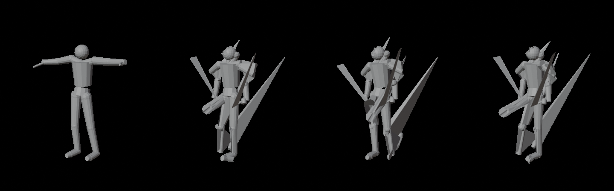
bmesh.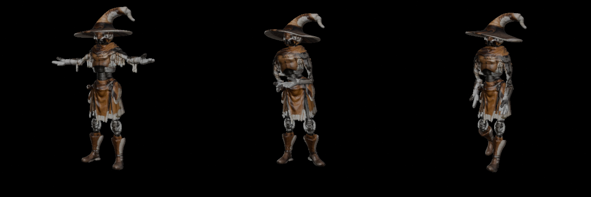
Na geração do personagem, duas tentativas de aproveitar a malha com moldura (Figura 5c) falharam, ambas visíveis na Figura 10:
As duas falhas tinham a mesma causa, a moldura. A solução foi tratar a origem: recortar o fundo da imagem antes e enviá-la transparente ao Hunyuan3D, o que gerou a malha limpa da Figura 5d.
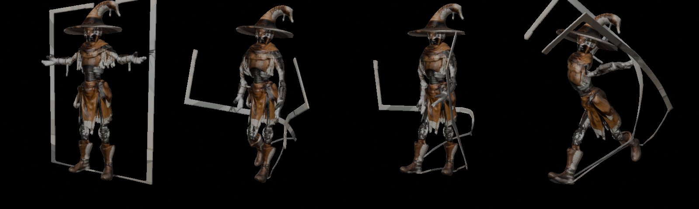
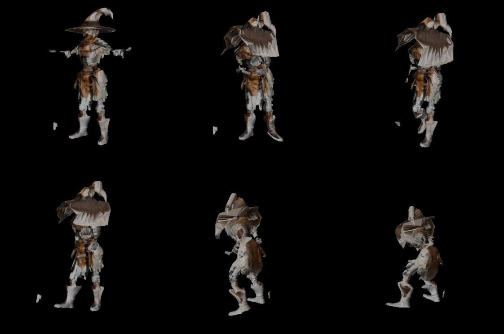
O erro mais traiçoeiro foi o da velocidade dos clipes. As verificações automáticas comparavam as velocidades gravadas no arquivo de configuração, e não a duração real das animações dentro do jogo, por isso passavam. Ele só apareceu ao medir o pé de apoio para validar a animação procedural: 5,4 m/s em vez de 1,35, exatamente 4 vezes mais. A importação dos arquivos FBX muda a cena do Blender para 120 quadros por segundo, e a exportação usou esse valor para converter quadros em segundos. Além da correção, foi criada uma verificação que compara a duração de cada animação no Godot com a calculada no Blender.
A Figura 11 mostra o jogo com a animação procedural, capturado pelo roteiro automático que simula os comandos WASD e Shift. A Figura 12 mostra a cena automática da captura e os executáveis.
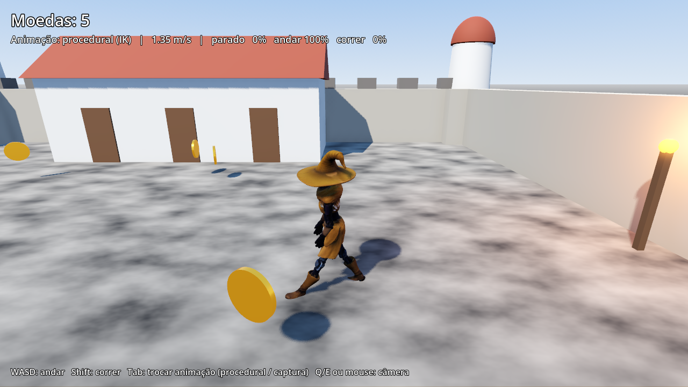
(a) Andando (procedural)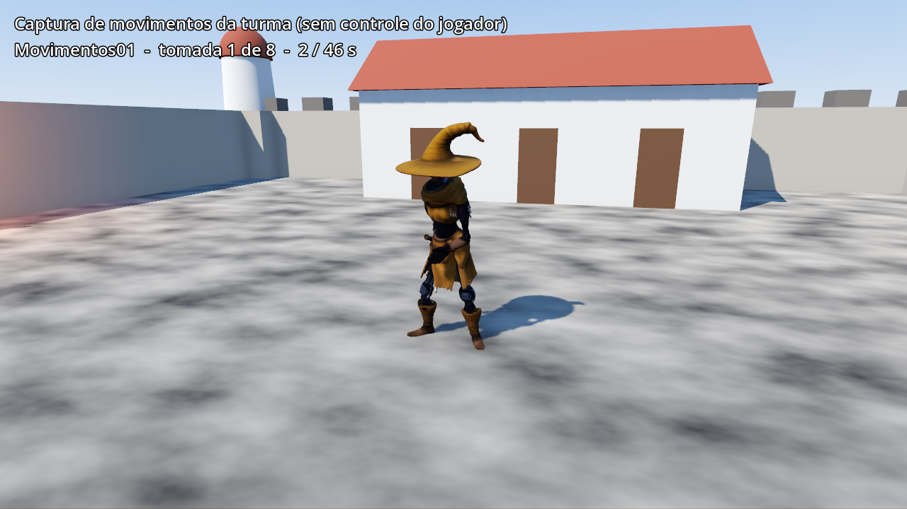
(a) Cena da captura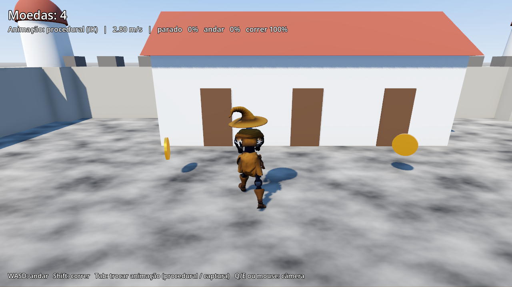
(b) Executável Windows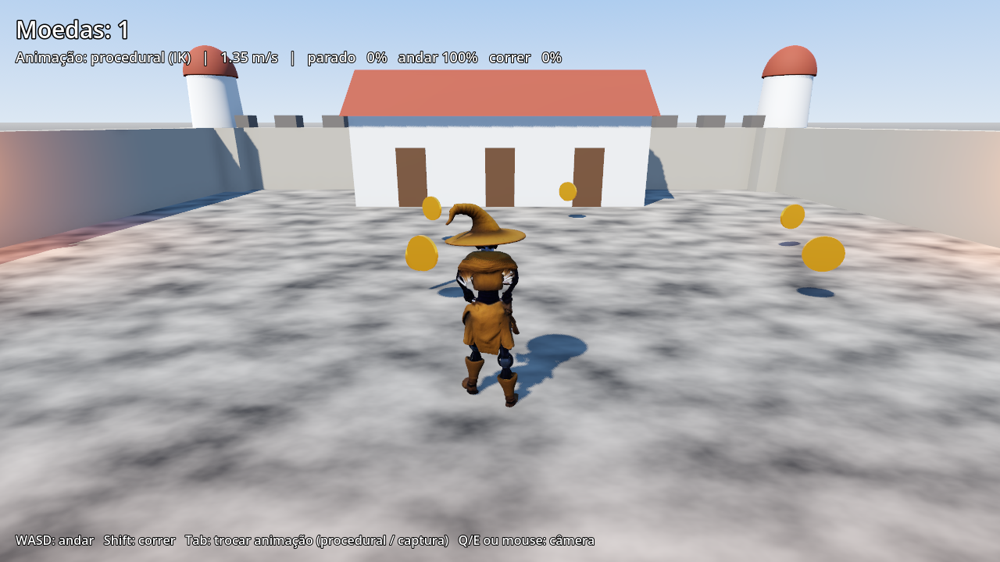
(c) Executável Linux (WSL2)Para mostrar por que o tratamento da Seção 3.2 é necessário, foi feita uma cena de comparação
(--raw-compare, vídeo demo_mocap_sem_tratamento.mp4). Dois personagens andam lado a lado, na
mesma velocidade, como um controlador de jogo os moveria, com a mesma caminhada da tomada
Movimentos02 (24,0–26,6 s). À direita, o trecho é usado exatamente como foi gravado, só posicionado no
ponto de partida; à esquerda, é o clipe do jogo (Figura 13). Sem tratamento aparecem três problemas:
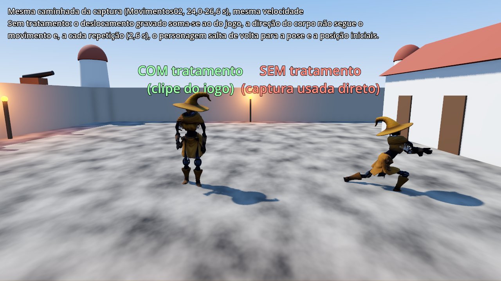
As 35 verificações automáticas (Tabela 3) passam. Foram gravados três vídeos (Tabela 4), e foram gerados executáveis de 64 bits para Windows e Linux, com os dados embutidos; o de Linux foi testado no Ubuntu do WSL2.
tests/smoke_test.gd).| Grupo | Itens | O que é verificado |
|---|---|---|
| Clipes | 13 | os 6 clipes das duas versões existem, repetem e têm a duração calculada no Blender; árvore de animação ativa |
| Tomadas completas | 8 | cada tomada da captura existe com a duração original |
| Hierarquia | 3 | 28 ossos; Hips é a raiz; LeftForeArm é filho de LeftArm |
| Mistura | 2 | pesos corretos em 0, na velocidade de andar e no meio do caminho, nas duas versões |
| Movimento | 7 | velocidades de andar e correr das duas versões; parada; Tab alterna as versões |
| Moedas | 2 | tocar uma moeda soma um ponto; a moeda reaparece em outro lugar |
docs/videos/).| Arquivo | Conteúdo |
|---|---|
demo_wasd_animacao_procedural.mp4 | Sessão de jogo com os comandos WASD e Shift simulados: parado, andar, curvas, correr, voltar e parar, coletando moedas |
demo_mocap_sequencia_completa.mp4 | As 8 tomadas completas da captura da turma (8 min 57 s), sem controle do jogador |
demo_mocap_sem_tratamento.mp4 | Curiosidade: a mesma caminhada usada sem tratamento, lado a lado com a tratada (18 s) |
Ferramentas de IA gerativa usadas, todas documentadas com prompts, sementes, parâmetros, horários e imagens
intermediárias em ia/README.md e ia/etapas/:
O trabalho cumpre o enunciado com um modelo hierárquico de 28 ossos e os dois tipos de movimento pedidos, em duas versões: a captura real da turma, inclusive as tomadas completas em uma cena automática, e uma animação procedural com cinemática inversa. As decisões que mais pesaram na qualidade foram a escolha automática dos pontos de loop, a remoção do deslocamento com distribuição do erro e o uso, no controlador, das mesmas velocidades para as quais cada clipe foi feito. Olhar os resultados e medi-los, e não apenas confiar nos testes, foi o que revelou os erros mais sérios, como o dos clipes acelerados. Como continuação, ficam a sincronização das fases da passada, uma captura de corrida mais longa e a reconstrução do cenário a partir das plantas da fortaleza.
Aristidou, A., Lasenby, J., Chrysanthou, Y. e Shamir, A. (2018). Inverse kinematics techniques in interactive applications: a survey. Computer Graphics Forum, 37(6):35–58.
Baran, I. e Popović, J. (2007). Automatic rigging and animation of 3D characters. ACM Transactions on Graphics, 26(3), artigo 72.
Esser, P. et al. (2024). Scaling rectified flow transformers for high-resolution image synthesis. Em Proceedings of the 41st International Conference on Machine Learning (ICML).
Kovar, L., Gleicher, M. e Pighin, F. (2002). Motion graphs. ACM Transactions on Graphics, 21(3):473–482.
Magnenat-Thalmann, N., Laperrière, R. e Thalmann, D. (1988). Joint-dependent local deformations for hand animation and object grasping. Em Proceedings of Graphics Interface '88, p. 26–33.
Parent, R. (2012). Computer Animation: Algorithms and Techniques. 3. ed. Morgan Kaufmann, Waltham.
Shoemake, K. (1985). Animating rotation with quaternion curves. ACM SIGGRAPH Computer Graphics, 19(3):245–254.
Tencent Hunyuan3D Team (2025). Hunyuan3D 2.0: Scaling diffusion models for high resolution textured 3D assets generation. arXiv:2501.12202.
von Wangenheim, A. Material didático de INE5420 – Computação Gráfica (captura de movimentos, personagens em Blender, IA gerativa). LAPIX/UFSC. Disponível em: https://lapix.ufsc.br/ensino/computacao-grafica/.